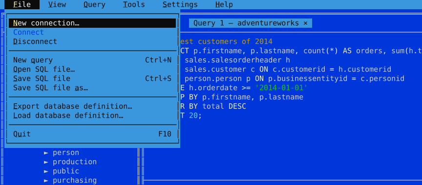
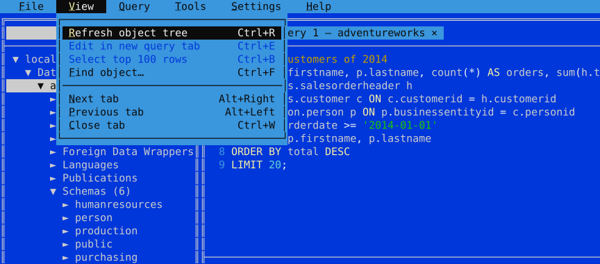
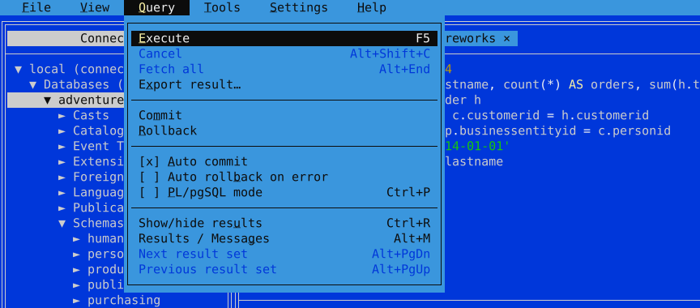
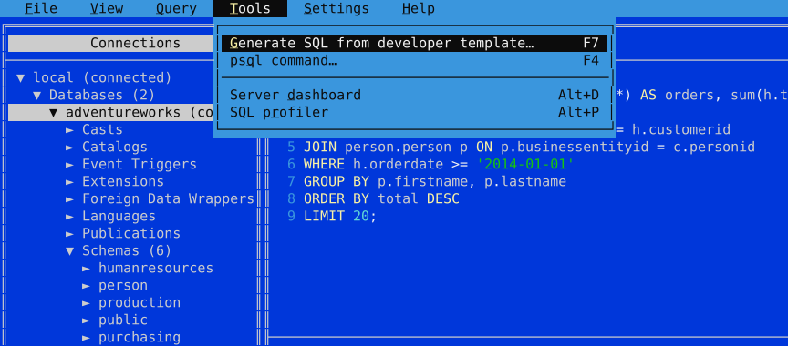
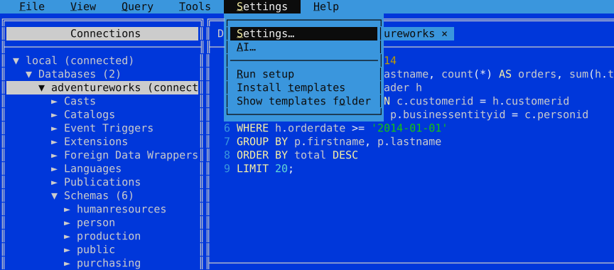
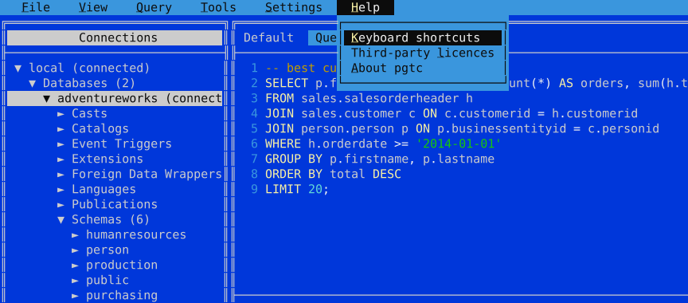
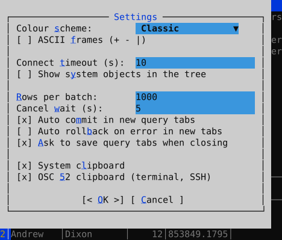
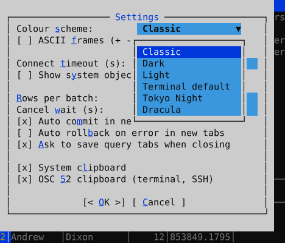

The window, menus and keys
How the screen is built, how to move between its parts, and how menus, dialogs and the mouse work. These rules are the same everywhere in pgtc.
The parts of the window

| Part | Where | What it is for |
|---|---|---|
| Menu bar | Top row | File · View · Query · Tools · Settings · Help. Opened with F9. |
| Object tree | Left frame, titled Connections | The saved connections and, below a connected server, its cluster-wide objects, databases and the objects in them. See Object tree. |
| Tabs | Right frame | The Default tab, object tabs, query tabs and the dashboard, profiler and statistics tabs. |
| Tab strip | First row of the right frame | The names of the open tabs. Every tab except Default has a × to close it with the mouse. |
| Tab status row | Last row inside the right frame | Belongs to the tab you see: its session as connection · role@database (local · postgres@adventureworks), what it is doing, and the cursor position (Ln 1, Col 1). |
| Window status line | Bottom row of the screen | Messages of the program: Saved …, Disconnected, hints why a key did nothing, the quick-search text. |
There is no row of function-key hints at the bottom and there are no icons: the space goes to your data. F1 tells you the keys at any moment.
The tabs of the right frame
| Tab | Opened with | Shows |
|---|---|---|
| Default | Always there; cannot be closed | The definition of the row selected in the tree. It changes as you move in the tree. |
| Object tab (named after the object) | F3 in the tree | The definition of one object; it stays while you move on. |
| Query n – database | Ctrl+N | A SQL editor and its results. See Query tabs. |
| Dashboard: server | Alt+D in the tree | Server dashboard. |
| Profiler: server | Alt+P in the tree | SQL profiler. |
| Stats: server · database | Alt+I on a database | Database statistics. |
Focus: where your keys go
Exactly one part of the window has the focus and gets your keys. You always see which one: its strip is drawn in the highlight colour —
- the tree's title Connections while the tree has the focus;
- the active tab's name while the upper part of the right frame has it (the editor, the definition, a list);
- the active label of the results bar (Messages or a result set) while the results have it.
A strip without the focus is shown in a quieter colour, so only one strip stands out.
Moving the focus
| Key | Second key | Goes to |
|---|---|---|
| F6 | Ctrl+Tab | From the tree to the right frame, and back. In the right frame you land in the part you used last. |
| Alt+1 | Ctrl+1 | The object tree — from anywhere. |
| Alt+2 | Ctrl+2 | The right frame — from anywhere. |
| Alt+Down | Ctrl+Shift+Down | The lower part of the right frame: the results or messages of a query tab, the statement pane of the dashboard and the profiler. If that part is hidden, it is shown first. |
| Alt+Up | Ctrl+Shift+Up | The upper part: the editor, the list. |
The second keys with Ctrl work only in terminals that report them (the Windows console, terminals with the kitty keyboard protocol). F6 and the Alt keys work nearly everywhere.
Tab does not switch between the parts of the window. In the editor it indents; in dialogs it goes to the next field; in the tree and the results it does nothing.
Switching tabs
Alt+Left and Alt+Right switch the tabs nearest to the focus:
| Focus is in… | Alt+Left / Alt+Right switch… |
|---|---|
| the editor, a definition, a statement pane, the profiler list | the main tabs of the right frame |
| the results or messages of a query tab | Messages and the result sets (1 → 2 → … → Messages) |
| the dashboard's list | the dashboard's lists (Sessions, Blocking, …) |
| the object tree | nothing — use / , or go to the right frame first |
Ctrl+W closes the active tab; so does a click on its ×.
F1: the keys that work now

F1 opens the window Keys available now. It lists only keys that do something in the situation you are in:
- first the keys of the part that has the focus, under its name (Object tree, Query editor, Object view, Results, Messages, Server dashboard, …), in groups: Actions, File, Moving, Selecting, Editing, Clipboard and undo, Find, Results, Windows and tabs;
- then Everywhere — the keys that work in every part;
- then Other keys — Esc + digit and the menu letters.
A key whose command cannot run at the moment is left out: Execute is listed only in a query tab that is not running, Cancel only while a query runs, editing keys only where text can be edited, and so on. With a dialog open, F1 shows the keys of dialogs.
For the list of all keys, in every part, use or the Keyboard reference.
The same key in different parts
A few keys have a different job depending on where the focus is:
| Key | Object tree | Query tab | Dashboard / profiler / statistics |
|---|---|---|---|
| Ctrl+R | Refresh the tree | Show / hide the results | Show / hide the statement pane |
| Ctrl+F | Find an object | Find / replace in the text | Profiler: filter |
| Ctrl+S | Quick search | Save the SQL file | |
| Ctrl+P | Open the SQL profiler | PL/pgSQL mode on / off | Pause / resume |
| F5 | Execute | Refresh; profiler: start / stop | |
| F8 | Delete the saved connection | Ask AI for SQL (into the editor, not run) | Dashboard: terminate the session |
| F3 | Object in a new tab | Find next |
To reach an action of another part, move the focus there — or use the menu, which is the same everywhere.
Esc + digit instead of F-keys
Some terminals, SSH clients and macOS do not pass function keys through. As in Midnight Commander, press Esc and then a digit within one second:
| Press | Works as | Press | Works as |
|---|---|---|---|
| Esc 1 | F1 | Esc 6 | F6 |
| Esc 2 | F2 | Esc 7 | F7 |
| Esc 3 | F3 | Esc 8 | F8 |
| Esc 4 | F4 | Esc 9 | F9 |
| Esc 5 | F5 | Esc 0 | F10 |
After Esc the status line shows that pgtc waits for a digit. If you press nothing for a second, Esc acts as plain Esc; if you press another key, Esc is handled first and then that key.
Menus



[x]


Using the menu bar
| Key | What it does |
|---|---|
| F9 | Opens the menu bar (the File menu). F9 again, or Esc, closes it. |
| Left / Right | The menu to the left / right. |
| Up / Down, Home / End | Move among the items; disabled items are skipped. |
| Enter | Runs the highlighted item. |
| a letter | Runs the item of the open menu whose highlighted (underlined) letter it is. |
| Alt + letter | Opens the menu with that letter in its title (Alt+Q = Query). |
So F9, Right, Right, E runs .
- The key shown at the right of an item is the key of that command in the part of the window you came from.
- An item that cannot run now is drawn in the quiet “disabled” colour: for example the whole Query menu while no query tab is active, or New query while no database is selected in the tree.
- With the mouse: click a menu title, then an item.
Every menu item is described in the Menu reference.
Context menus
F2 — or a click with the right mouse button — opens a small menu for what is under the cursor: a row of the tree, the result grid, the messages, a list of the dashboard or the profiler. It holds only what applies to that row. It is used like a pull-down menu: arrows, Enter, the highlighted letter, Esc.

adventureworks.Dialogs

| Key | What it does |
|---|---|
| Tab / Shift+Tab | Next / previous field or button. |
| Alt + letter | Jumps to the field whose label has that letter highlighted. |
| Enter | Presses the default button — the one drawn as [< OK >]. On another button: presses that button. In a list: chooses the row. |
| Ctrl+Enter | Presses the default button from any field, also from a list or a multi-line box. Only where the terminal reports Ctrl+Enter (Windows, kitty-protocol terminals); elsewhere it arrives as Enter. |
| Esc, F10 | Cancel: closes the dialog without doing anything. |
| Space | Checks / unchecks a checkbox [x]. |
| Arrows, Home, End, Backspace, Delete | Edit the text of an input; move in a list. |
| Ctrl+V / the terminal's paste | Pastes into the input. |
In questions with Yes / No buttons you can also press the highlighted letter of a button (Y, N).
A double click on a row of a list is the same as selecting it and pressing Enter.
Drop-down lists (combo boxes)

A field with a ▼ at its right is a list of choices. It works the same in every dialog and in the
developer template forms.
| The list is… | Key | What it does |
|---|---|---|
| closed | Enter, Space, click | Opens the list. |
| Left / Right | Changes the value without opening the list. | |
| open | Up, Down, PgUp, PgDn, Home, End | Move. |
| Enter, Space, click | Takes the highlighted value. | |
| Esc, click outside | Closes the list; the value stays as it was. | |
| Tab | Closes the list and moves to the next field. | |
| letters | In a list longer than its box: narrows the list to what you type (the frame says type to filter). |
Message and help windows
Messages and errors have one button; Enter or Esc closes them. Errors are drawn in the error
colour (white on red in Classic). Long texts — the key lists, the licences, a whole dashboard row — open in a
scrolling window: Up / Down, PgUp / PgDn, Home / End or
the mouse wheel scroll it, and a ▼ at the right edge shows that there is more below.
Mouse
The mouse is optional — nothing needs it — but it works where you would expect:
| Action | Where | What it does |
|---|---|---|
| Left click | A menu title, a menu item | Opens the menu, runs the item. |
A tab name; the × of a tab | Switches to the tab; closes it (with the same questions as Ctrl+W). | |
| A row of the tree, a cell of a grid, the editor | Moves the cursor there and gives that part the focus. | |
| A label of the results bar | Shows Messages or that result set. | |
| A button, checkbox, input or list row of a dialog | Presses, toggles, focuses, selects. | |
| Twice on a list row or a message | As Enter there. | |
| Right click | Tree, results, lists | The context menu (F2). |
| Drag | The border between the tree and the tabs | Changes the width of the tree. The width is remembered. |
| The line above the results bar (or above a statement pane) | Changes the height of the results. | |
| In the editor | Selects text. | |
| Wheel | Editor, grids, lists, help windows | Scrolls. |
pgtc takes the mouse over from the terminal. To select and copy text with the terminal's own selection, hold Shift while you drag.